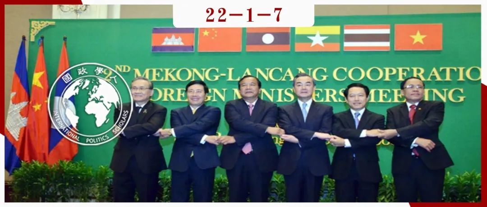

收录于合集 #《国际关系前沿》2022年第1期 23个

作品简介
作者 ： Guangyu (Karin) Qiao-Franco，南丹麦大学博士后研究员。Yao Song，香港中文大学人文与社会科学学院客座研究员。刘天阳，武汉大学政治与公共管理学院副研究员。
编译 ： 秦子宁（国政学人编译员，武汉大学国际政治学硕士生）
来源 ： Song, Y., Qiao-Franco, G., Liu, T. (2021). Becoming a normative power? China’s Mekong agenda in the era of Xi Jinping. International Affairs, 97(6), 1709-1726.
归档 ： 《国际关系前沿》2022年第1期，总第40期。

导读
文章从规范性力量的角度，以中国在湄公河地区进行的一系列外交行动，对中国近些年来提出的“一带一路”、“命运共同体”和“新亚洲安全观”等概念在该地区的扩散进行了研究。作者认为，中国通过两种机制推广自身的规范性力量，一种是由精英推动自上而下的扩散，一种是自下而上，通过当地民众日常生活和中国在当地基础设施当中的实际存在形成的感知。前者形成了精英群体对中国提出的国际规范倡议，如“命运共同体”、“新亚洲安全观”和“亲诚惠容”等的认知和接受。后者则是通过中国援建的设施，形成了当地人对中国对当地现代化和经济发展积极意义的认知，进而接受中国对规范性力量的相关概念。这篇文章具有重要的意义，为中国的规范性力量扩散提供了一条可以分析的路径和框架，为描述中国这种“基建狂魔”模式对国际行为规范的影响提供了思路和方法。
然而作者也发现，这种“从基础设施到规范”的模式也存在局限性。首先，这种模式会受到基于现实主义的领土争端等的影响，如越南对于中国相关的倡议偏向负面；其次，中国由于在依靠基础设施推广规范性力量的过程中，在这些国家形成了大量的物质投入和资产规模，因此形成了双边关系的相互依赖，从而对中国反过来形成了制约作用。最后，由于中国在湄公河地区的进展，引发了美国和印度等国的警惕，中国的湄公河议程将来还将面临更多的挑战。
摘要 ****
对中国来说，与湄公河地区的邻国保持良好的外交关系已成为至关重要的外交战略。近年来，中国一直在重塑湄公河地区的规范性力量，通过调动和重新配置其物质和规范资源，推动“命运共同体”等国际规范性倡议在地区内的传播。
文章认为，中国的规范性力量源于两个主要机制： 其一为由政治精英推动的自上而下的有组织传递 ，包括政府间对话、双边和多边合作机制所驱动的社会化过程，以及在互联互通的谈判与实施过程中话语的本土嵌入； 其二为自下而上的观念传播 ，通过中国在湄公河次区域的日常实践（包括商品交换、贸易和援助）与物质性呈现而形成。总的来说， 中国在湄公河次区域的规范性参与是由多种波动的规范性生产模式组成的，这些模式在不同地缘经济和地缘政治环境下的沿岸国之间“同步共振” 。作者的研究结果表明，虽然规范的中国话语已被某些湄公河国家的精英阶层所接受，但中国构建规范性力量的尝试在该地区的民间社会还需要进一步提升。
编译
01
引言
湄公河是链接中国、老挝、缅甸、泰国、柬埔寨和越南的重要水道，与湄公河流域国家保持良好的双边和多边关系，对中国外交和国家安全具有重要战略意义。现有研究都集中在中国在该地区的经济和军事力量上，但是对中国推动的规范性力量（定义国际关系中什么行为是“标准”的权威）却缺乏研究。鉴于中国在湄公河地区的影响力取决于该地区行为体在认知上对中国的接受和承认，文章对中国国家力量中的规范性维度进行了研究。
文章首先回顾了中国的规范性力量，比较了新时代中国规范性议程相较于此前的新变化；其次介绍了中国通过自上而下和自下而上两个过程建立规范性力量以及湄公河国家精英和大众阶层对此的反应；最后对中国周边外交战略的有效性和局限性进行了分析评估。
02
作为研究主题的规范性力量
规范性力量的概念近年来在非欧洲语境的研究中获得了关注，其中一些学者关注中国的国家认同、世界观和外交哲学，以历史哲学和文化为依据，试图构建“中国学派”的国际关系体系。赵汀阳的“天下观”、秦亚青的“关系论”和潘伟的“中国模式”就是典型的例子。与西方的现实主义假设不同，中国可以实现和平崛起。而现实主义假设认为中国将颠覆“自由主义”秩序，以自己的形象重构国际体系。在有关中国规范性力量的大量研究中，中国以何种方式实现自身的国际秩序愿景和中国是否成功实现了自身的规范性目标仍然不甚明了。
作为新兴的规范提倡者， 中国规范性力量相比于传统的规范性力量更依赖于物质资源的支持 。这种现象在中国在湄公河地区行使规范性力量上表现得尤其明显，因为湄公河地区的国家都有着强烈的经济发展愿望。湄公河国家与中国的合作最初受到理性的成本- 收益计算所驱动，目的是获得中国的经济援助、投资和开阔中国市场的前景。作者进一步研究了湄公河国家在这个过程中是否发生了当地认知过程的变化，以及这些变化是否与中国在外交倡议上的努力相一致。通过实证分析，文章指出中国规范性力量的来源存在两种不同的机制：自上而下有组织的规范扩散和自下而上无组织的规范扩散。自上而下的进程是精英驱动的，包括政府间对话、通过双边和多边合作机制进行社会化、以及与参与中国主导的互联互动和基础设施建设倡议的国家进行谈判。自下而上的过程包括从日常实践（商品交换、贸易和援助）中产生的观念，以及中国在湄公河地区的实际存在——集中体现在该地区广泛建设的大规模的基础设施上。
中国在湄公河地区扩大的规范参与是由多种不同的规范生产模式组成的。与欧洲和美国不同，中国的崛起是在自由主义已经成为现代国际社会“默认设置”的背景下发生的。此外，中国所代表的许多社会主义制度规范仍然在现有的国际体系中被压抑。
03
中国规范性议程的演变
20世纪70年代末，中国通过通过睦邻友好与和平共处五项原则修复与湄公河国家的关系，以降低区域国家间的不安感和不信任。自冷战结束以来，睦邻友好以更为制度化的区域合作方式呈现与深化，将中国重塑为一支促进和平、稳定和经济增长的国际力量。进入21世纪后，“互利和共同繁荣”，“和谐世界”和“中国和平发展”成为中国政府倡导的叙事之一， 以降低湄公河次区域国家的对华威胁感知。进入新时代后，中国对于规范性力量的推动更加积极主动，提出了在“亲诚惠容”的原则基础上与周边国家加强合作的理念，且进一步提出建立“命运共同体”，成为中国规范性外交的元话语。“命运共同体”在湄公河地区的建设基于两大支柱。第一个支柱是强劲、稳定的经济增长；第二个支柱是推动新亚洲安全观。
04
自上而下的规范执行和各国的回应
国际关系学者认为，大国发挥规范性力量的主要工具是将其规范性力量社会化，然而作者认为中国的规范力量更多依赖于物质激励与转化。中国根据湄公河地区各国的战略需求提出了“偏好多样化”的本土化合作战略。这些项目建立在本土发展需求之上，为中国深入其规范性嵌入创造了有利的条件，以促进中国的外交准则与话语的认可和接受。内部需求与外部供应的契合度决定了每个国家对中国规范性力量的接受程度。作者通过三个案例来比较中国行使规范性力量的情况，这三个案例是：老挝建设中老铁路，柬埔寨建设西哈努克港经济特区，以及越南建设河内地铁。
这种将基础设施投资与推动规范性力量结合在一起的战略，是由这三个国家共同的内部需求促成，即通过改善其各自的国民经济和基础设施来加强其政权合法性与稳定性。然而，基础设施投资能否有效转化为对规范的接受，有赖于根本利益的契合。在老挝和柬埔寨，基础设施融资已经有效地产生了规范性力量，这反映在这些国家的领导人将中国的理念，特别是“命运共同体”纳入他们的政治话语系统之中，从而阐释本土的发展。相比之下，中国“从基础设施到规范”的转化路径在越南表现得十分曲折困难。比如，越南领导人很少将河内地铁项目与“一带一路”联系起来：基础设施的建设并未导出对特定话语的引入与接纳。“基础设施建设- 规范性生成与传递”的机制同时被柬埔寨、老挝与越南的外交影响力、投资依赖度、地缘政治环境与历史记忆所再塑。
从上面的分析可以看出，对湄公河国家基础设施的投资能够促进中国规范和价值观的合法化。然而，这些物质激励无法克服根深蒂固的价值观和利益差异，尤其是在涉及领土关切的情况下。
05
自下而上的规范扩散和不同的社会反应
中国的规范性力量赢得了湄公河地区的一些政治和经济精英的支持，但它是否说服该地区更广泛的普通民众呢？调研发现，尽管中国的规范力量相对成功地赢得了湄公河地区一些政治和经济精英的支持，但从社会说服程度来看，效果不稳定，亦不均衡。根据以往研究，湄公河国家的普通民众对中国官方的宣传倡议（包括命运共同体、新亚洲安全观和经济振兴等）大多一无所知或无动于衷。对中国规范性影响的认知并非来自于公共政策中推广的抽象概念，而更多地出现在湄公河流域人民与日常实践的互动中，以及中国的物质性建设之上。
根据调研，湄公河国家接受中国规范的程度各不相同。大多数老挝人和柬埔寨人都积极评价中国的影响力——他们认为中国带来的经济发展对政府和个人都有吸引力，因此对中国的规范性力量更加开放。特别是，基础设施周边空间居住生活的人们会与这些基础性物质供应产生各种样态的内在联系，从而在人地互动中发展出一种新的意义。
对于老挝和柬埔寨的老一辈人来说，实用主义不仅将中国的影响与发展理念联系在一起，还与个人生存联系在一起。一些人认为，相比于西方国家的自由主义宣说，中国的基础建设满足了他们务实的生活需求；相比于西方的强烈的价值倡议，中国显得“安静”，并通过基础设施建设，渐渐融化为日常生活背景中的一部分；宣说会被很快忘记，而生活背景将持续存在。
基于这些观点，作者认为，有权势的行为体不必在特定问题上直接采取行动影响他者。相反，它们可以塑造互动的环境基础设施以符号学和美学意向的形式改变物质排列，改变空间和政治的形状，并改变规范性力量的生成与转化机制。通过改变建筑环境，规范的基础设施化一方面是隐藏的、日常的和矛盾的，另一方面是可预见的和有形的。因此，中国的基础设施力量不仅是广泛的、物质性的，而且是深刻的、认识论的。
而在泰国、缅甸和越南，当地人对中国规范性力量的观点偏向负面。大多数泰国人对中国的了解是通过西方媒体间接获得的，中国的主流媒体一直试图通过和泰国本地新闻机构合作来动摇西方的意识垄断，但未实现预期效果。越南对中国的长期战略怀疑甚至不允许中国官方媒体进入越南社会。鉴于这种不情愿，中国组织了两国媒体工作者的对话，让自己有机会解释中国在某些争议上的立场。然而，这些宣传活动并没有减轻越南官员和居民的怀疑。
简而言之，老挝和柬埔寨社会更具有务实主义特点，并在此基础上接受中国基础建设的规范溢出。而泰国和越南民众的看法则更为分歧。一方面，泰国和越南人承认中国项目所带来的好处；另一方面，在其意识结构中，很多民众不愿意接受中国的规范性概念。缅甸对中国规范性力量的态度相对中立。缅甸受访者对中国在“软实力”方面的新进展给予了高度评价。然而，缅甸人日益高涨的民族主义情绪使得中国很难将其经济投资转化为当地人的规范性支持。
06
结论
中国在湄公河地区倡导的“命运共同体”理念有两个相互关联的支柱：经济振兴和地区安全。通过推动符合双边共同利益的项目，中国推动了这些国家对中国规范性力量的认可，尽管这些规范在不同国家和社会水平上的接受程度有所不同。这种对“基础设施建设- 规范性生成与传递”的机制，使中国有别于传统的规范性大国（如欧盟和美国），后者的规范主要通过观念社会化推动。
但是，中国的规范性力量尚未成为湄公河地区的主流规范。首先，中国与该地区国家的合作，并没有获得完全的成果。从中国自上而下和自下而上两种规范扩散的研究可以看出，其规范性力量被一些老挝和柬埔寨的精英阶层接受，但受到越南的长期质疑与抵制。其次，中国在湄公河的进展将继续引发其他大国的竞争行动，中美在该地区的竞争日趋激烈。中国规范性力量在湄公河地区的扩散，还面临诸多困难。
词汇整理
规范性力量 Normative Power
命运共同体 Community of Shared Destiny
一带一路倡议 Belt and Road Initiative
和平共处五项原则 Five Principles of Peaceful Coexistence
新亚洲安全观 New Asian Security Concept
审校 | 池佳曈 阮镇炜
排版 | 叶拯 黄伊蕾
文章观点不代表本平台观点，本平台评译分享的文章均出于专业学习之用, 不以任何盈利为目的，内容主要呈现对原文的介绍，原文内容请通过各高校购买的数据库自行下载。

国政学人
支持学术公益与知识传播
微信扫一扫赞赏作者 __赞赏
已喜欢，对作者说句悄悄话
取消 __
发送给作者
发送
最多40字，当前共字
上一页 1/3 下一页
长按二维码向我转账
支持学术公益与知识传播
受苹果公司新规定影响，微信 iOS 版的赞赏功能被关闭，可通过二维码转账支持公众号。